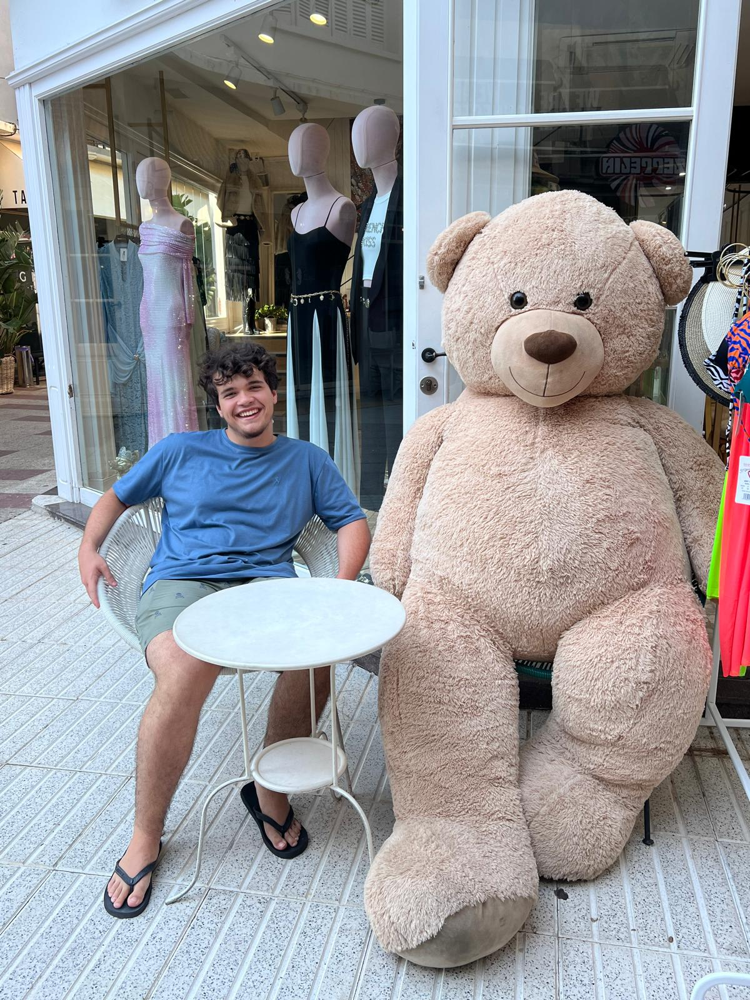

Brief Description
I am studing to be a computer science engineer who is aiming to work in the future in the videogame sector, thanks to my university I think I have a great oportunity in life to get a work when I finish my degree.
Gallery

Curriculum Vitae
- Education: Computer science(in progress).
- Skills: HTML, CSS, Git.
- Lenguages: Spanish - English.
You can see my CV over here: Download PDF
Social Media
Conect with me: